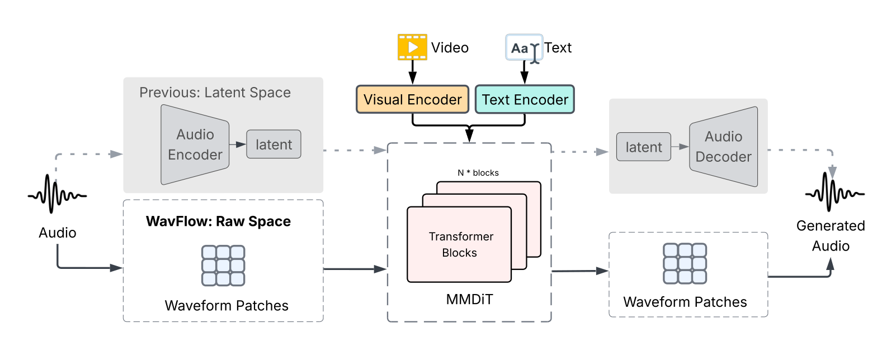
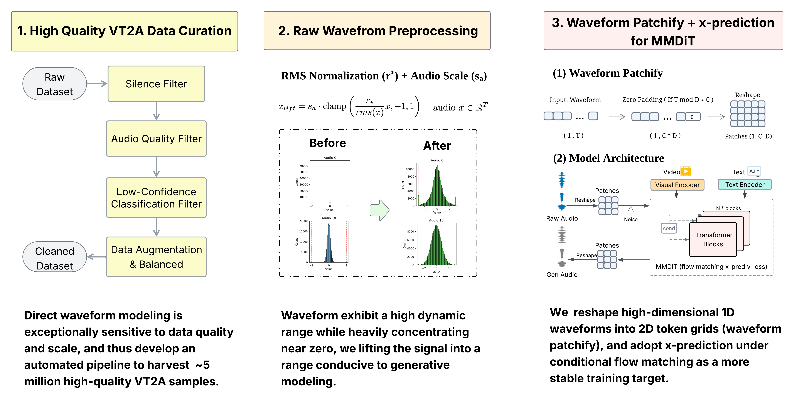

Modern audio generation predominantly relies on latent-space compression, which introduces complexity and potential information loss. challenges this paradigm by generating high-fidelity audio directly in raw waveform space. By utilizing waveform patchifying and amplitude lifting, WavFlow enables stable flow matching via direct x-prediction, bypassing intermediate representations entirely. Achieving state-of-the-art results on VGGSound and MovieGen-Audio, WavFlow demonstrates that latent compression is not a prerequisite for high-quality synthesis, offering a simpler and more scalable alternative for multimodal generation.


We showcase six categories of common everyday Foley sounds synthesized by . Click any video to experience how our raw-waveform (VAE-free) model brings sound to life.
Comparison with Baselines on the MovieGen Benchmark
Click any card below to load the full comparison with , MMAudio, and MovieGen Audio for that scene.
Quantitative Results
Evaluation on VGGSound-Test Benchmark
Comparison with state-of-the-art methods on VGGSound-Test for video-text-to-audio (VT2A) generation. Lower is better for FD, KL and DeSync; higher is better for IS, IB and CLAP. The best and second-best results are highlighted in bold and underlined, respectively.
| Method | FDPANNs↓ | FDPaSST↓ | KLPANNs↓ | ISPANNs↑ | IB↑ | DeSync↓ | CLAP↑ | Params |
|---|---|---|---|---|---|---|---|---|
| Frieren† | 11.45 | 106.10 | 2.73 | 12.25 | 0.23 | 0.85 | 0.11 | 159M |
| V2A-Mapper† | 8.40 | 84.57 | 2.69 | 12.47 | 0.23 | 1.23 | 0.11 | 229M |
| HunyuanVideo-Foley∗ | 10.53 | 97.85 | 2.02 | 14.99 | 0.32 | 0.54 | 0.23 | — |
| MMAudio-L-44.1kHz† | 4.72 | 60.60 | 1.65 | 17.40 | 0.33 | 0.44 | 0.22 | 1.03B |
| 6.37 | 62.64 | 1.68 | 17.24 | 0.30 | 0.47 | 0.21 | 624M | |
| 5.86 | 59.98 | 1.66 | 17.40 | 0.31 | 0.44 | 0.22 | 1.03B | |
| 5.25 | 55.82 | 1.73 | 15.05 | 0.31 | 0.46 | 0.19 | 1.03B |
All methods are evaluated on the same VGGSound test split from the MMAudio benchmark, utilizing original videos and native class labels as captions to ensure a fair comparison. Due to the difference in semantic granularity (sparse labels vs. dense captions), we exclude direct comparisons with models relying on LLM-refined captions. † results taken from the MMAudio paper. ∗ reproduced using their open-source checkpoints on the same test set.
Evaluation on MovieGen-Audio-Bench
Reference-free evaluation on MovieGen-Audio-Bench (no ground-truth audio). The best and second-best results are highlighted in bold and underlined, respectively.
| Method | Params | Training Data | IS↑ | CLAP↑ | IB-score↑ | DeSync↓ |
|---|---|---|---|---|---|---|
| 1.03B | ~11.1K h | 8.95 | 0.28 | 0.24 | 0.77 | |
| MMAudio | 1.03B | ~8.2K h | 8.40 | 0.28 | 0.27 | 0.77 |
| MovieGen | 13B | ~1,000K h | 8.89 | 0.29 | 0.36 | 1.00 |
@article{zhou2026wavflow,
title = {WavFlow: ...},
author = {Zhou, Feiyan and ...},
journal = {arXiv preprint},
year = {2026},
}